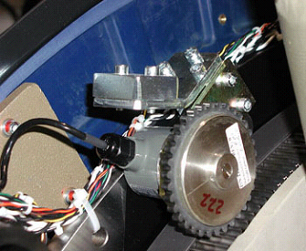

Operating Documentation
Direction 5193855-800, Rev# 4
LS 5.X RT Ltd. Access Service Information Adv
Operating Documentation |
| Required Persons | Preliminary Reqs | Procedure | Finalization |
|---|---|---|---|
| 1 | Timing Not Applicable | 10 - 15 | Timing Not Applicable |
This procedure is for Limited Access Compliant systems.
| Last Revised: | 3 April, 2007 |
| Item | Qty | Effectivity | Part# | Manufacturer | |
|---|---|---|---|---|---|
| Rear Cover Dollies | 2 | - | - | - | |
| Top Cover Removal Tool | 1 | - | - | - | |
| DO NOT STAND ON THE LEFT SIDE TO MAKE THIS ADJUSTMENT. | |
| Shock Hazard. | |
| Voltage Present | |
| No service on left side while energized. |
| Follow ALL required safety and PPE procedures when working on energized equipment. | |
| Turn OFF HVDC Gantry enable and axial drive. | |
| TGPU cover removal is not required for this procedure. | |
| Condition | Reference | Eff |
|---|---|---|
Only trained service personnel should service the GE CT Scanner. | - | - |
Remove the side and top covers, then tilt the gantry to S-30.
| NOTE: | Gantry covers removal is required to gain access to the encoder and home flag assembly. |
| GANTRY 120VAC IS PRESENT DURING THIS PROCEDURE. | |
Rotate the gantry until the opto-sensor is in the center of the home plate. See Illustration 1 for examples of correct and incorrect sensor locations on the Home Plate.
Illustration 1: Home Plate Passing Through Opto-Sensor Window

Verify that the Home Flag is centered in the Opto-Sensor Device.
| NOTE: | Visual line of site to see the home flag and determine if it is centered may be more challenging on some systems due to component placement. |
From behind the gantry, lift and rotate the encoder until the LED on the clamshell lights up, then lower it onto the gear.
With the Home Flag centered and the LED on, ensure that the encoder center line is perpendicular to the gear.
If the C-Pulse does not flash or light up, verify that the Home Plate is in the center of the opto-sensor, then lift and rotate the encoder gear assembly one tooth at a time in each direction until the c-pulse lights up. See Illustration 2.
Illustration 2: Encoder Gear Assembly

| NOTE: | If the C-Pulse is not lined up with the center of the home plate, images may appear slightly tilted or rotated. |
Repeat Step 2 through Step 5 until the alignment process is completed.
Recheck and tighten any hardware or cable clamps you may have removed to gain access to the Home Flag or encoder board.
Replace all removed covers.
No finalization required.